TH — Thailand
The main impact of a 200 basis-point (2.00 percentage-point) rise in United States interest rates on Thailand is a 0.04% drop in GDP by the 11th quarter — a limited spillover. This is a minimal-band result, ranked 17th of the countries covered by absolute GDP effect. The shock is a US monetary tightening; Thailand's own policy response and the global financial channel do the work. The peak GDP loss of −0.0418% of GDP arrives in Q11, and by Q20 the drag has mostly faded to −0.0099% of GDP. Nothing here is a forecast; these are model impulse responses relative to a baseline in which US rates never move.
Demand and trade. Household consumption (Consumption) peaks at −0.0197% below baseline in Q12 and is still −0.0056% below baseline in Q20 — a slow, persistent squeeze on households rather than a sharp collapse. Private investment (Investment) is the hardest-hit domestic demand component, peaking at −0.1299% below baseline in Q9, then recovering so strongly that it turns slightly positive (+0.014%) by Q20. Net exports (the trade balance, since this model does not split imports from exports) improve, peaking at +0.0732% above baseline in Q8 and fading to +0.0067% by Q20. Government spending (Gov Spending) edges up modestly, peaking at +0.007% above baseline in Q11, a small automatic-stabiliser-style offset. Government debt (Gov Debt) falls relative to baseline, reaching −0.0316% in Q17 and −0.03% by Q20, consistent with the primary balance improving as the economy slows less than revenues.
External / FX. The real exchange rate (Currency Strength) appreciates, peaking at +0.2826% above baseline in Q8 and still +0.0392% above baseline in Q20. That is the key tension in this simulation: a stronger real exchange rate would normally hurt competitiveness, yet net exports improve anyway. The reason is that the dominant force is weaker domestic demand, which pulls in fewer imports, so the trade balance improves even as the currency strengthens. The two series line up as a demand-driven, not competitiveness-driven, external adjustment.
Labour. Employment falls, peaking at −0.0248% below baseline in Q15 and still −0.0155% below baseline in Q20 — a delayed but durable labour-market cost. Unemployment rises by a peak of 0.0037 percentage points in Q13, easing to 0.0018 percentage points by Q20. Real wages rise initially, peaking at +0.053% above baseline in Q10, because inflation falls faster than nominal wages; but the gain reverses, turning negative around Q18 and reaching −0.0259% below baseline by Q20 as the labour market slack builds.
Prices. CPI inflation rises by a peak of 0.0429 percentage points in Q1, fades by Q4, and turns negative in Q9, ending at −0.004 percentage points by Q20. Domestic inflation follows the same shape, peaking at +0.03 percentage points in Q1 and turning negative in Q9, ending at −0.0028 percentage points. Firms' marginal cost falls, peaking at −0.0249% below baseline in Q11 and still −0.0059% below baseline in Q20. The early inflation bump is a pass-through from the stronger currency and imported prices; the later disinflation is the demand gap doing its work.
Financial conditions. The local policy rate initially rises, peaking at +0.0319 percentage points in Q3, then turns negative in Q11 and falls to −0.0319 percentage points by Q16, ending at −0.025 percentage points in Q20 — an initial defensive hike followed by easing as the slowdown bites. Government 2-year yields (Govt 2Y Yield) rise early, peak at +0.0269 percentage points in Q1, turn negative in Q7, and reach −0.0286 percentage points by Q13. Government 5-year yields (Govt 5Y Yield) fall throughout, peaking at −0.0177 percentage points in Q11. Government 10-year yields (Govt 10Y Yield) also fall, peaking at −0.0082 percentage points in Q11. Bond prices (Bond Price) fall initially, peaking at −0.213% below baseline in Q8, then recover and turn positive in Q13, ending at +0.1041% above baseline in Q20. Equity prices (Equity Index) fall, peaking at −0.3107% below baseline in Q8 and still −0.0329% below baseline in Q20. Tobin's Q (the value of installed capital) falls, peaking at −0.0909% below baseline in Q9, then turns positive in Q19 and ends at +0.0098% above baseline in Q20. House prices (House Prices) decline steadily, peaking at −0.0476% below baseline in Q16 and still −0.0431% below baseline in Q20. Bank credit falls, peaking at −0.0051% below baseline in Q17 and still −0.0049% below baseline in Q20. Lending spreads (Credit Spread) widen only marginally, peaking at +0.0001 percentage points in Q17 — essentially flat, which is why the financial drag is so contained.
Sectoral and capital. Manufacturing GDP is the most exposed sector, falling by a peak of −0.0877% below baseline in Q8, then recovering to −0.0094% below baseline by Q20. Services GDP falls by a peak of −0.023% below baseline in Q11 and is still −0.0055% below baseline in Q20. The capital stock (Capital Stock) declines gradually, peaking at −0.0064% below baseline in Q18 and still −0.0062% below baseline in Q20 — a small but persistent scar from weaker investment.
Timing. The GDP hit is largest in Q11 at −0.0418% of GDP. It has largely faded by Q20, when the drag is −0.0099% of GDP, though it has not fully disappeared. The equity and manufacturing peaks come earlier (Q8), the labour-market and house-price peaks later (Q13–Q16), so the sequence runs financial conditions first, activity second, labour and housing last.
Close. These are model impulse responses to a 200 basis-point US rate rise, measured against a baseline path — not forecasts, and not trading advice. They describe how Thailand's economy would deviate from that baseline under the model's estimated transmission channels.
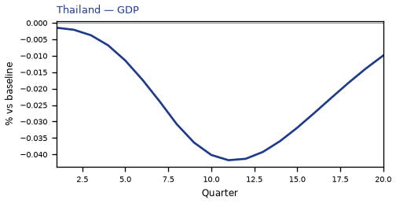
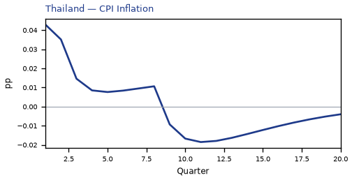
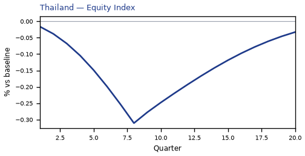
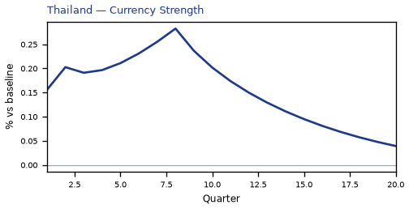
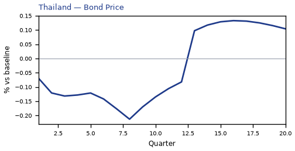
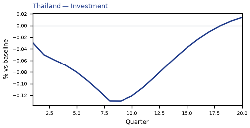
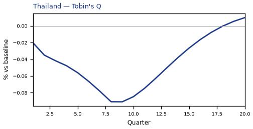
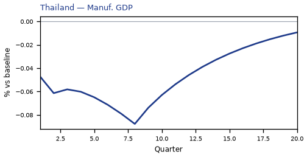
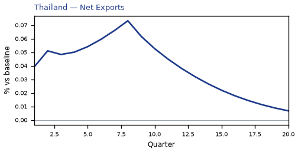
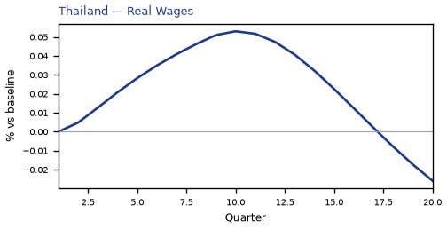
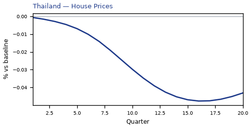

source=live · global_macro_v5 · contract v6 · Q1–Q20 JSON · not financial advice